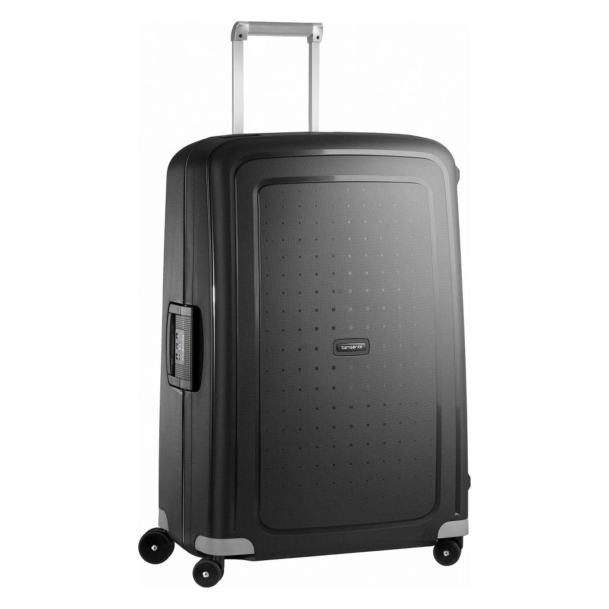

Photo 1 of 5 · Front corner view. Product images from the brand and retailer listings.
Samsonite · 75 cm · 102 litres · Black
Samsonite S'Cure Spinner 75 cm
A large hardside suitcase with a three-point latch instead of a zip, an integrated TSA lock and four double spinner wheels. 102 litres in a lightweight polypropylene shell.
Features above come from the Amazon listing, Samsonite’s description and the product photos. Dimensions and weight are Amazon’s figures, not our measurements.
Amazon lists this case at 75 × 52 × 31 cm and 4.6 kg empty. That is a large hold suitcase. Check your airline’s hold-baggage size and weight limits before buying. Compare your allowance →
As an Amazon Associate, we earn from qualifying purchases, at no extra cost to you.
View the latest price and availability on Amazon UK. Confirm the size, colour, seller, delivery estimate and return terms before ordering.
What you are buying
The Samsonite S'Cure Spinner in size L (75 cm, 102 L), Black, sold on Amazon UK. The same listing offers other sizes and colours, so confirm the selection before ordering.
How we researched it
Based on the retailer listing, Samsonite’s product description and the product photos. Based on published specifications; not a hands-on test.
Where you check out
You purchase on Amazon UK. When we checked on 9 November 2026 the listing showed Amazon as the seller, with the item in stock. Confirm the current seller, delivery estimate and returns policy.
Compare your hold allowance.
Many airlines state a hold-bag limit as the total of height, width and depth, plus a weight limit. Enter the figures for your fare to compare them with this case. This is a size comparison, not airline approval.
Check the airline’s own rules for how it measures, including wheels and handles. The case’s weight when packed counts towards the weight limit, and listing dimensions may differ slightly from the actual bag.
Why shortlist it, and what to weigh up.
Why shortlist it
- A three-point locking system with a seal replaces the zip, which Samsonite says helps keep moisture out and makes the case easy to secure.
- An integrated TSA lock and an integrated ID tag are included.
- The shell is polypropylene (Samsonite’s Flowlite material), which the brand says gives a thin but strong shell. The listing gives 4.6 kg.
- Four double spinner wheels turn through 360 degrees, and the dual-tube telescopic handle has aluminium tubes and adjusts in length.
- Inside, the photos and listing show cross ribbons, a large side pocket in the base and a zipped divider pad in the lid.
Know the trade-offs
- It is a large check-in size, not cabin luggage. Check your airline’s hold limits, and remember 4.6 kg empty counts towards the weight allowance.
- The listing does not describe the case as expandable, so you cannot add capacity for the journey home.
- The shell is plastic and the photos show no external pocket, so quick-access items need to go inside.
- Amazon’s review summary notes mixed feedback on the locking mechanism, and some reviewers report problems after use. Read recent reviews for the size and colour you choose.
- Reviewers also say the body is smaller than the headline size on some sizes, so check the measured dimensions rather than the 75 cm name alone.
Who should probably look elsewhere
- Anyone travelling cabin-only.
- Travellers who want a zipped, expandable case for extra capacity.
- Anyone with a tight hold weight limit who wants the lightest possible case.
- Anyone who needs an external pocket for quick access.
Compare the current offer, seller and delivery terms on Amazon UK before deciding.
Check current price on AmazonWhere this style of case fits in.
A two-week trip
Amazon’s listing describes the 75 cm size as a large suitcase for a two-week trip. What fits depends on how you pack, and the weight limit usually matters before the volume does.
Checked baggage
A hard shell with a latch closure and an integrated TSA lock suits a case that goes in the hold, with handles on the top and side and a grip on the bottom for lifting.
Organised packing
The cross ribbons hold the base layer in place and the zipped divider pad separates the lid, so clothes and shoes can stay apart.
What we know, and what is still to confirm.
- Product
- Samsonite S'Cure Spinner, size L (75 cm, 102 L), Black
- Type
- Hardside spinner suitcase for checked baggage
- Capacity
- 102 litres, from the Amazon listing
- Dimensions
- 75 × 52 × 31 cm (H × W × D as listed on Amazon). Confirm on the listing.
- Weight
- 4.6 kg, from the Amazon listing
- Shell
- Polypropylene, described by Samsonite as its Flowlite material
- Closure
- Three-point locking system with a seal, no zip
- Lock
- Integrated TSA lock, and an integrated ID tag
- Handles
- Multi-stage dual-tube telescopic handle with aluminium tubes, top and side carry handles, and a bottom grip
- Wheels
- Four double spinner wheels with 360-degree rotation. Samsonite says the bottom wheels are bigger for use upright.
- Interior
- Lowered cross ribbons with a large side pocket in the bottom shell, a zipped divider pad in the top compartment, and a printed lining
- Colour
- Black (shown here). Other colours are listed on Amazon.
- Other sizes
- The listing offers S (55 cm, 34 L), M (69 cm, 79 L), L (75 cm, 102 L) and XL (81 cm, 138 L)
- Made in
- Europe, according to the listing
- Warranty
- Not confirmed. Warranty terms can differ by retailer and region, so check the Amazon listing and Samsonite’s information.
Capacity, dimensions and weight come from the Amazon UK listing; materials and construction from Samsonite’s description on that listing. Checked 9 November 2026. Current stock, seller, ratings and offer were not reverified.
Included in the box
The suitcase, as shown in the photos. Confirm the exact contents on the listing before ordering.
S'Cure 75 cm next to other large cases.
Swipe the table sideways to see more →
| Model | Key features | Size | Capacity and weight | Best for |
|---|---|---|---|---|
| Samsonite S'Cure Spinner 75 cm (this product) | Three-point latch with seal, integrated TSA lock, dual-tube aluminium handle, zipped divider pad and cross ribbons | 75 × 52 × 31 cm (Amazon listing) | 102 L. 4.6 kg (Amazon listing) | Checked baggage on a longer trip, with a zip-free hard shell |
| Samsonite S'Cure Spinner 69 cm | Same S'Cure design in a smaller body: three-point locking, TSA lock, divider and cross strap | 69 × 49 × 29 cm (Coolblue listing) | 79 L. 4.2 kg (Coolblue listing) | A shorter trip, or when a large case would be too much |
| Samsonite Intuo Spinner 75 cm | Zip closure, expandable, TSA number lock, internal compression straps | 75 × 52 × 31 cm (Galaxus listing) | 105 L, 115 L expanded. 3.6 kg (Galaxus listing) | Travellers who want extra capacity and a lighter shell, and accept a zip |
| American Tourister SoundBox Spinner 77 cm | Zip closure, expandable, fixed TSA combination lock, polypropylene shell | 77 × 51.5 × 29.5 cm, 32.5 cm deep expanded (John Lewis listing) | 97 L, 110 L expanded. 4.2 kg (John Lewis listing) | A large zipped case with room to expand |
Figures come from each retailer’s listing, not our own measurements, and may vary by colour or model year. The cases are close in size but differ in closure and expansion, so check which features matter to you. Prices are not shown because they change often; check the retailer for the current price.
Before you pack it.
Will it fit as cabin baggage?
No. At 75 × 52 × 31 cm on the listing it is a large check-in case, well beyond typical cabin allowances. If you want a cabin size, the same S'Cure range lists a 55 cm model.
Does it meet airline hold limits?
That depends on the airline and fare. The listing size adds up to 158 cm across the three dimensions and the case weighs 4.6 kg empty. Use the checker above, then read your airline’s rules, including how it measures wheels and handles.
Does it have a lock?
Yes. The listing describes an integrated TSA lock and a three-point locking system. Samsonite provides instructions for setting your own combination.
Is it waterproof?
Samsonite says the seal and the lack of zips help against moisture getting in during travel. That is not the same as waterproof, and we have not confirmed how it copes with heavy rain.
Is it expandable?
The listing does not describe this model as expandable. If extra capacity matters, look at expandable zipped cases such as those in the table above.
Which sizes are available?
The listing offers S (55 cm, 34 L), M (69 cm, 79 L), L (75 cm, 102 L) and XL (81 cm, 138 L). This page is about the L size. Check that the right size is selected before you order.
What warranty and returns should I check?
We have not confirmed a warranty period, and terms can differ by retailer and region. Check the seller, warranty and returns policy on the Amazon UK listing before ordering.
Why is there no price?
Amazon prices and availability change often, so we do not copy them here. Use the button to see the current offer.
Have you tested this yourselves?
No. This page is based on the retailer listing, Samsonite’s published description and the product photos, not a hands-on test.
One case for the next long trip?
Compare the current offer, seller and delivery terms on Amazon UK before deciding.
Check current price on AmazonAs an Amazon Associate, we earn from qualifying purchases, at no extra cost to you.